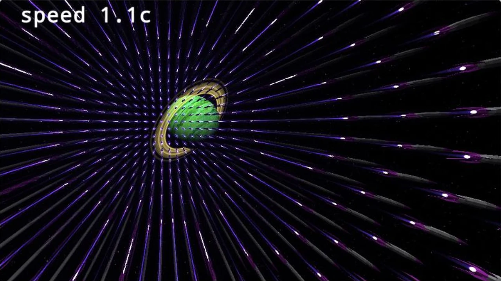
Shadertoy demos
Shader experiments
Links to some of my demos and code in shadertoy. Shadertoy is a platform for creating and sharing shaders. "Shader" is a type of program that runs on the GPU and can create complex visual effects in real time. The shaders linked here are mostly visual experiments related to physics concepts, but they can also be appreciated for their artistic and technical qualities.
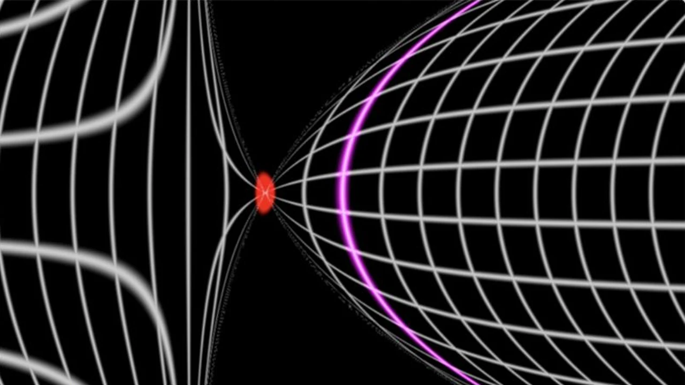
2023-12-14
Rindler transformations 2D
Construction of Rindler coordinates for an observer under constant proper acceleration.
Open on Shadertoy →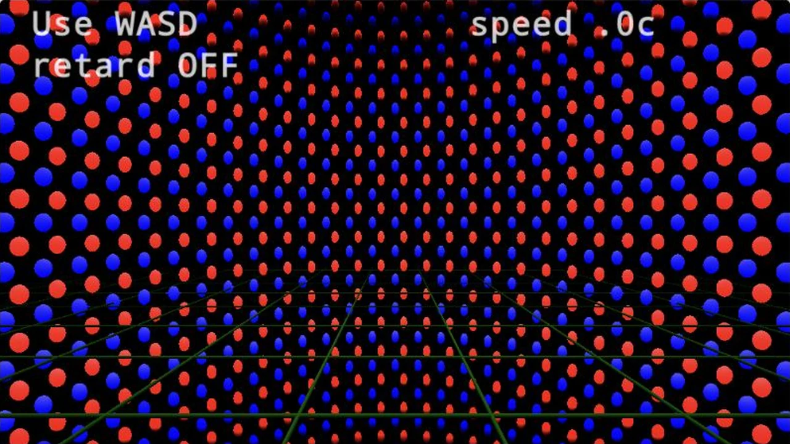
2023-03-08
Origins of Magnetism 3
Magnetic forces are electric forces in the moving frame. Part 3
Open on Shadertoy →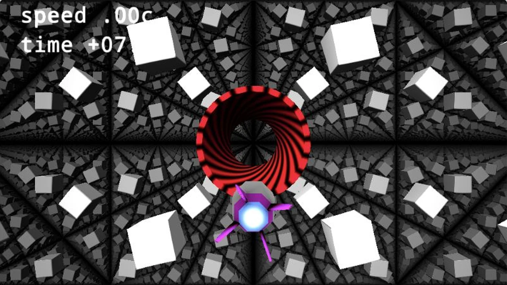
2022-07-12
Relativistic Space Drive
Relativistic speeds from first person perspective. Retardation effects included.
Open on Shadertoy →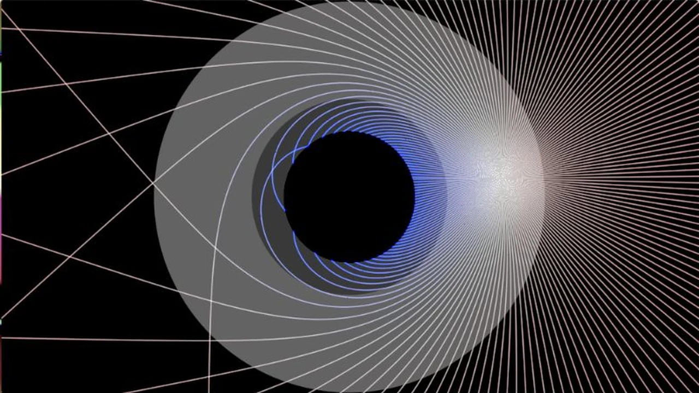
Shadertoy
Black Hole Geodesics 2D
Launch a fan of light rays around a black hole.
Open on Shadertoy →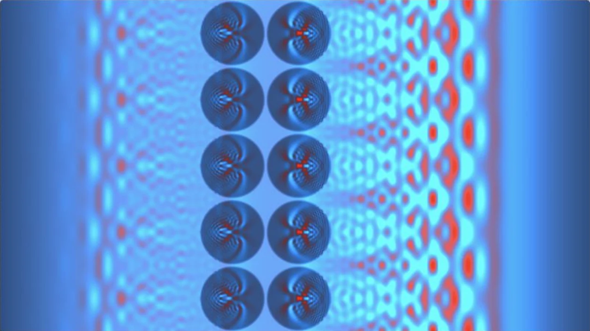
Shadertoy
Maxwell's Equations simulation
Wave propagation in a refractive medium with absorbing boundaries.
Open on Shadertoy →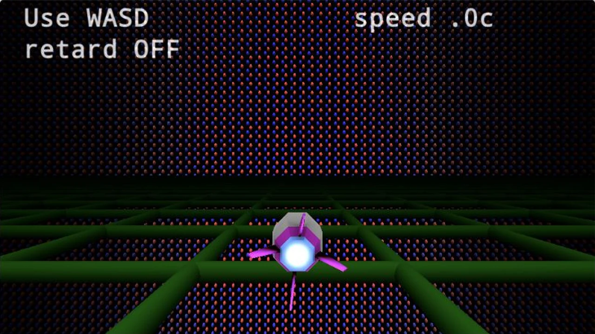
Shadertoy
Origins of Magnetism 2
Magnetic forces are electric forces in the moving frame. Part 2
Open on Shadertoy →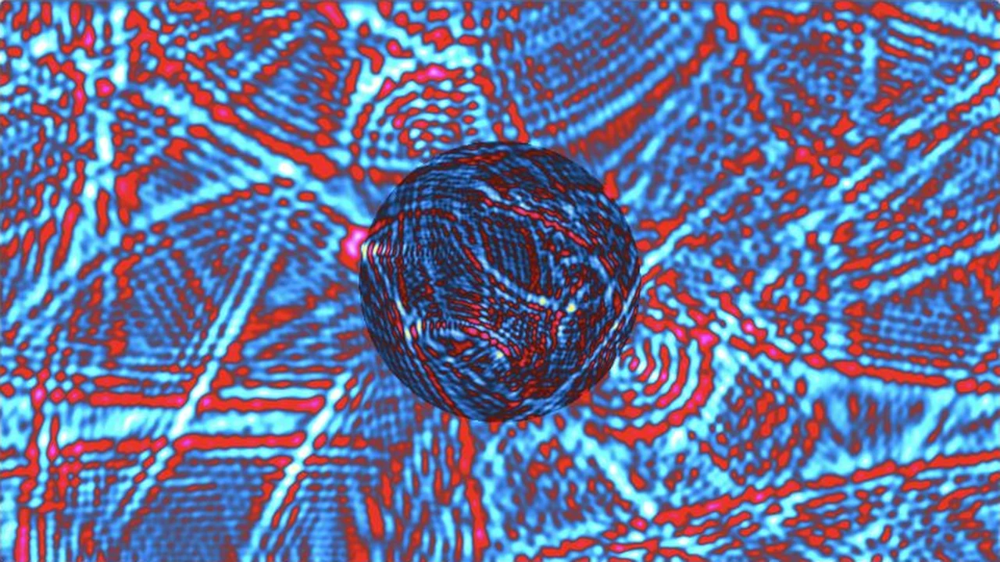
Shadertoy
Maxwell's Equations with soft refraction
Wave propagation in a refractive medium
Open on Shadertoy →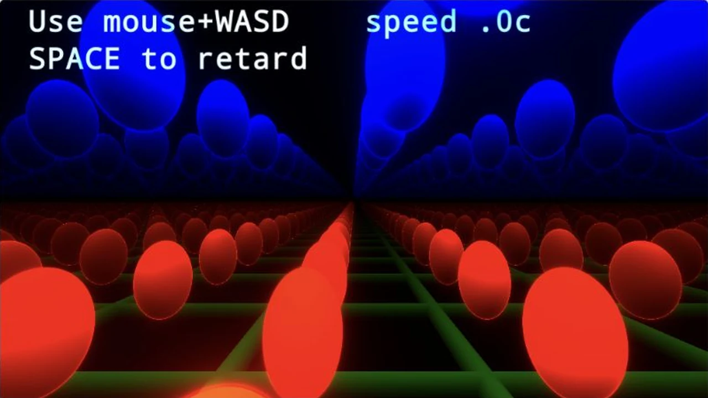
Shadertoy
Origins of Magnetism 1
Magnetic forces are electric forces in the moving frame. Part 1
Open on Shadertoy →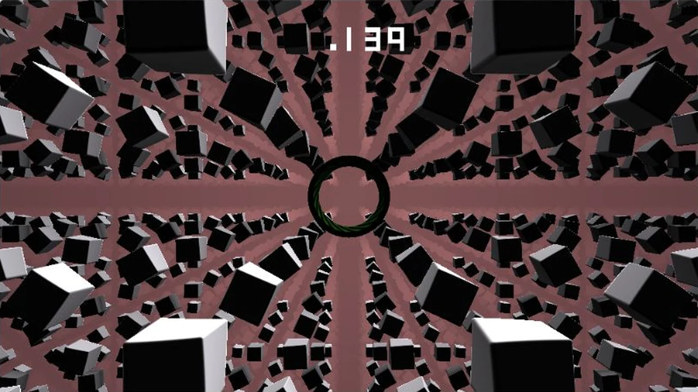
Shadertoy
Rindler Horizon
Visualization of Rindler horizon in first person perspective.
Open on Shadertoy →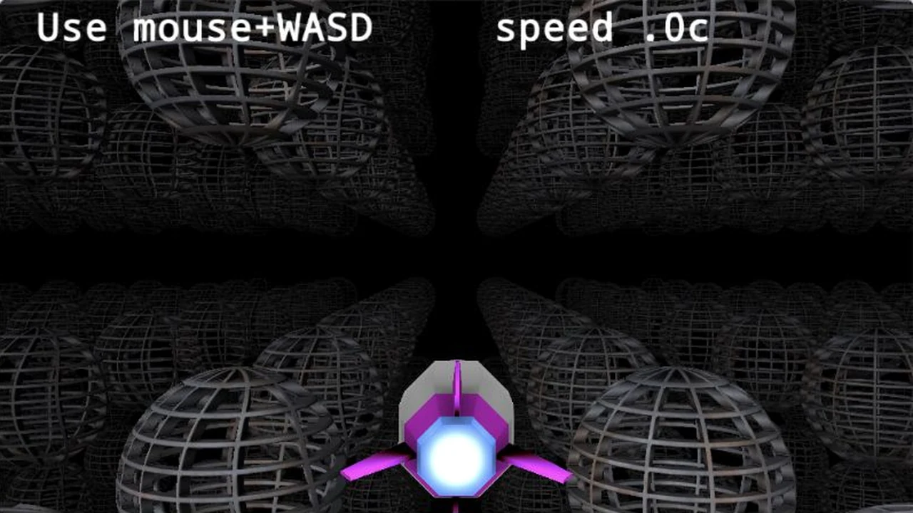
Shadertoy
Terrel-Penrose effect
What Spheres, both rotating and unrotating, look like for a fast-moving observer.
Open on Shadertoy →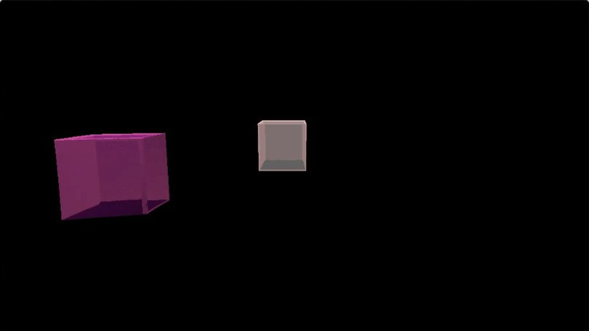
2022-06-14
Retard3D
My first attempt at a ray-marched 3D scene with retardation effects.
Open on Shadertoy →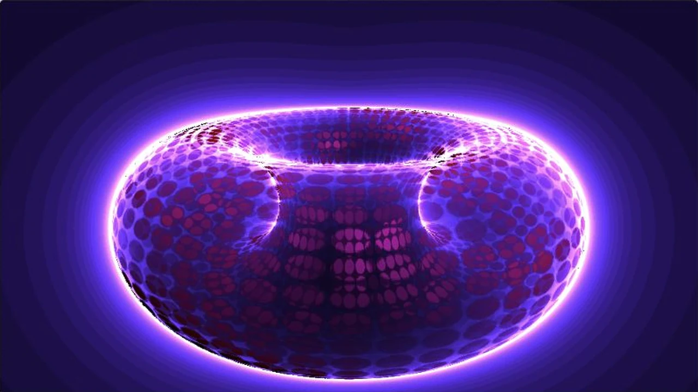
2022-04-28
Game of Life on Torus
A buffer-practice: Game of Life shader on a Toroidal world.
Open on Shadertoy →